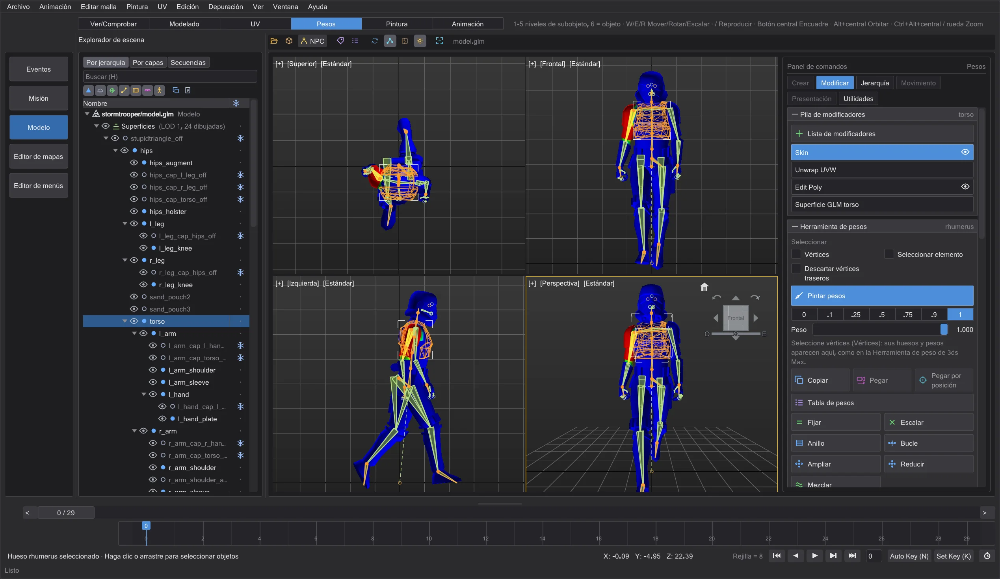
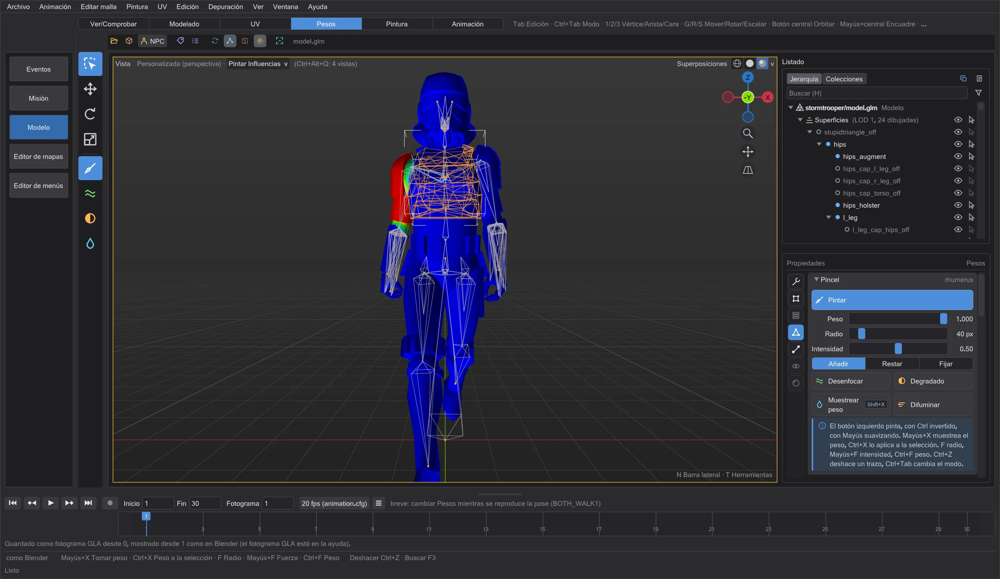
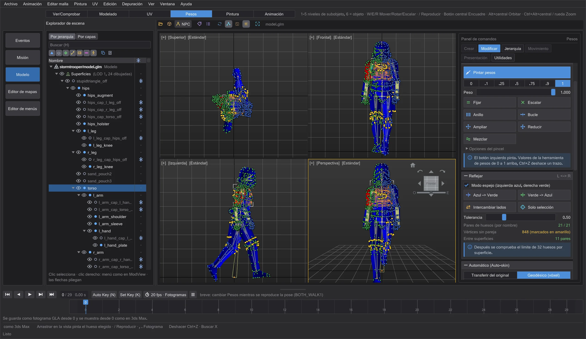

Pestaña Model: Weights
Pinta y edita los pesos de hueso de un modelo mientras la animación sigue en marcha, con las herramientas de 3ds Max o de Blender según el modo de control. Refleja un lado en el otro a través de las superficies, bloquea huesos y comprueba en todo momento si el modelo cabe en los límites del juego.
El panel de la derecha#
Elige un hueso en el explorador de escena o en el grupo Hueso; el modelo muestra entonces sus pesos de azul (0) a rojo (1) y los huesos se ven. Como 3ds Max, el panel de comandos muestra en la pestaña Modificar los grupos Pila de modificadores, Herramienta de pesos, Reflejar, Automático (Auto-skin), Hueso, Límites de JKA y, cerrado, Parámetros avanzados. Como Blender, el editor de propiedades muestra en la pestaña Datos Pincel, Opciones, Limpieza, Reflejar, Automático (Auto-skin), Hueso y Límites de JKA. Cada función está también en la búsqueda de todas las acciones (X, F3 como Blender) y en el clic derecho de la vista, bajo Herramientas de pesos.


Pintar#
El botón principal Pintar pesos (como Blender: Pintar) activa y desactiva la pintura. Activado, el botón izquierdo pinta el peso del hueso elegido; desactivado, selecciona - vértices en el nivel de vértice (1) - para las herramientas que trabajan sobre una selección. El pincel añade, resta, suaviza o fija el peso; como en Blender hay además Degradado (arrastre una línea: peso completo al inicio, nada al final, lineal o radial) y Difuminar (arrastra los pesos con el pincel). Como en 3ds Max, estos y el radio, la intensidad y el reflejo al pintar están bajo Opciones del pincel. Con Normalizar automáticamente (como 3ds Max: Normalizar, activado de fábrica) los pesos de un vértice suman siempre 1: el hueso pintado conserva su valor y los demás se reparten el resto. Un trazo es un paso de deshacer.
En modo Blender valen las teclas del weight paint de Blender: un trazo con Ctrl resta, con Mayús suaviza; Mayús+X muestrea el peso bajo el ratón (Muestrear peso), Ctrl+X lo aplica a la selección; F, Mayús+F y Ctrl+F arrastran radio, intensidad y peso: un clic confirma, Esc o clic derecho cancela.
Herramienta de pesos y limpieza#
Como el Weight Tool de 3ds Max: con la pintura desactivada, los valores fijos de 0 a 1 fijan de inmediato el peso del hueso elegido en los vértices seleccionados; Escalar lo multiplica por el factor de escala (0,95 de fábrica), Mezclar iguala los vértices seleccionados con sus vecinos, y Anillo, Bucle, Ampliar y Reducir amplían o reducen la selección (anillo y bucle recorren cuadriláteros; una malla de triángulos se empareja en cuadriláteros para ello sin cambiar el modelo). Las órdenes de limpieza de Blender - Normalizar todo, Limpiar, suavizar todos los huesos y Limitar: 4 - actúan sobre cada vértice, o sobre los seleccionados si hay vértices seleccionados; como en 3ds Max están en Parámetros avanzados como Normalizar todo, Quitar pesos cero y Límite de huesos: 4. Los vértices en el mismo lugar - en una costura UV o donde se tocan dos superficies - reciben siempre los mismos pesos, para que la malla no se rasgue al moverse.
Vértices como el modificador Piel de 3ds Max: el grupo Herramienta de pesos tiene *Seleccionar: Vértices, Seleccionar elemento, Descartar vértices traseros*; haga clic o arrastre sobre vértices, Ctrl añade, Alt quita. Su lista muestra cada hueso con el peso de los vértices seleccionados (la media si son varios); haga clic en un hueso y escriba un valor o use .1/.25/.5/.75/.9/1: la suma sigue siendo 1. Copiar, Pegar y Pegar por posición copian pesos entre vértices, la tabla de pesos (acoplable) lista vértices × huesos y Pegar simetría copia los vértices seleccionados al otro lado con los huesos izquierdo y derecho intercambiados; los pares están en Pares de huesos. Como en Blender, el panel Pesos de vértice muestra la misma lista. Pintar pesos sigue siendo una herramienta más; al guardar se mantiene el formato del juego (4 pesos, 10 bits).
Reflejar#
Los huesos se emparejan por sus nombres (lhumerus y rhumerus), los vértices por su lugar, a través de las superficies: en JKA el brazo izquierdo y el derecho son superficies propias. La tabla del grupo muestra los pares de huesos, los vértices sin pareja y las superficies que se reflejan entre sí; Tolerancia indica a qué distancia del lugar reflejado puede estar la pareja. Como 3ds Max, Modo espejo (izquierda azul, derecha verde) marca los vértices en la vista (amarillo: sin pareja), Azul -> Verde y Verde -> Azul copian un lado en el otro, Intercambiar lados los intercambia y Solo selección limita los tres a los vértices seleccionados. Como Blender, Reflejar grupo refleja el hueso elegido y Todos los grupos todos los huesos, con Reflejar pesos y Intercambiar nombres (L<->R): sin selección de vértices se intercambian ambos lados, con una el lado seleccionado recibe el otro. Espejo por topología busca las parejas por la estructura de la malla cuando sus mitades están construidas igual pero no colocadas exactamente igual. Tras reflejar, el mensaje nombra una superficie que ahora usa más huesos de los que lee el juego (32).

Hueso, bloqueos y los límites del juego#
El grupo Hueso muestra el hueso elegido y la pose (secuencia y fotograma); la animación sigue en marcha mientras se trabaja. Bloquear bloquea el hueso elegido: ningún pincel ni orden cambia sus pesos, y la normalización trabaja a su alrededor. Los huesos bloqueados aparecen en una lista con una x para desbloquearlos; Bloqueos (como Blender: K) abre el menú que bloquea o desbloquea todos los huesos, el elegido o todos los demás. Mostrar huesos activa los huesos en la vista; en esta área están activados de fábrica. El grupo Límites de JKA muestra en barras lo que lee el juego: vértices y huesos por superficie (de la superficie seleccionada, o si no de la más cercana al límite) y el máximo de pesos en un vértice. Aplicar (4 pesos, normalizados) escribe los pesos pintados en el modelo tal como los lee el juego: los cuatro mayores, normalizados, en 10 bits.
Guardar, nivel de detalle y Ctrl+Z al pintar#
Guardar escribe los pesos que muestra la vista, también mientras hay listas de pintura abiertas (tras pintar o un comando de esta área, antes de Aplicar (4 pesos, normalizados)): el archivo recibe los cuatro pesos por vértice que muestra la pose, normalizados como los lee el juego, y las listas de pintura siguen abiertas para seguir pintando. La comprobación antes de guardar y los límites de JKA en Modelado miden lo mismo. Con Solo las superficies seleccionadas y Reflejar después, Auto-Skin refleja solo en las superficies seleccionadas: para reflejar un brazo en el otro, selecciona ambos.
Pintar y los comandos de esta área se aplican al nivel de detalle mostrado (con Auto sigue al zoom); los demás niveles conservan sus pesos: solo Auto-Skin pondera todos los niveles. Mientras hay un trazo, un degradado, un arrastre o un cuadro de herramienta abierto, la vista mantiene el nivel en el que empezó aunque la rueda haga zoom; el nuevo nivel llega al soltar. Una selección de vértices, aristas o polígonos pertenece a su nivel: tras un cambio de nivel está vacía, y vuelve cuando la vista regresa a ese nivel y su malla no ha cambiado entretanto (pintar pesos no cuenta). Ctrl+Z con el botón del ratón pulsado termina el trazo, degradado o arrastre abierto y lo deshace; Ctrl+Y lo rehace.